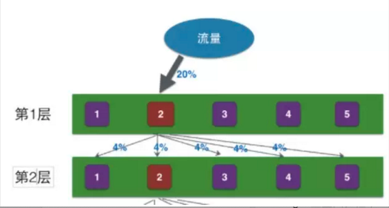

分层实验系统
背景
我们开发一个新的功能，如何知道用户是否会喜欢呢？其中一种方式就是通过AB test.
直观思维下的AB test系统
简单的做法就是我们将整体用户流量划分出一部分给当前的feature, 然后在通过一些数据分析新功能的效果.
限制:
如果我们想同时评估多个feature,因为流量的总量是有限的，而且每个feature需要的最小流量也必须保障足够大. 如何解决这种问题?
分层实验的思路
核心思路:
将实验分层，层与层之间正交.
即上一次实验的结果均匀分发的下一层, 确保下层无论有多少组实验，每个实验的受到上层实验的影响都是一致的.

如上, 第一层实验2的效果会均匀分发到第2层，
将要做的一大堆实验进行分层，相互之间有影响的分在一层，没有影响的分在不同层。 这样保证了层与层之间的正交.
如何实施
将相关联的一组参数放到一个subset中.
为什么要将相关联的参数放在一组参数里，因为这些参数不可以在不考虑其他参数值的情况下任意调整.
eg: 网页的背景色和前景色在设置时必须要相互考虑，不然都设置成一样的话，网页就不可读了.
每个subset构成一个layer
每个layer可以包含多个实验 (实验的个数由这组参数的cardinality 决定)
实验平台的作用
自动化
更精准的流量细分(多条件支持比如用户特征,设备特征等等),流量切分，效果评估,流量校验
历史追溯
怎么做
效果评估
请求的实验信息会以 tag 的形式记录在生产环境的请求日志中，形如： layer1_layer2_layer3_…_layerN。 请求日志会落地到广告数据总线系统，再由广告实时流系统进行消费、数据清洗、实验效果指标计算等工作
问题
为什么要强调层与层之间流量的正交性？
第一层的流量通过二次离散,均匀分配到第二层,那么第二层每个桶都会收到第一层桶2实验的影响(同时也意味着，第二层每个桶做实验都是平等的)
如果层与层之间流量不正交(即第一层的2桶用什么流量,第二层的桶也用什么流量的)的话，那么第二层中将只有桶2受到第一层桶2的实验影响，那么第二层的各个实验之间将不在具有一致的实验基础，无法进行实验结果比对.
什么是流量饥饿?
理解为传统方式下,实验太多导致流量不足
什么是流量bias?
流量均匀性验证
参考:
https://blog.csdn.net/bigheadyushan/article/details/78089215
https://www.infoq.cn/article/weibo-ad-layered-experiment-platform-faraday